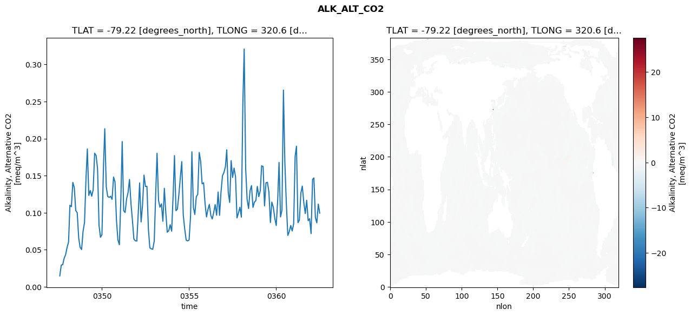
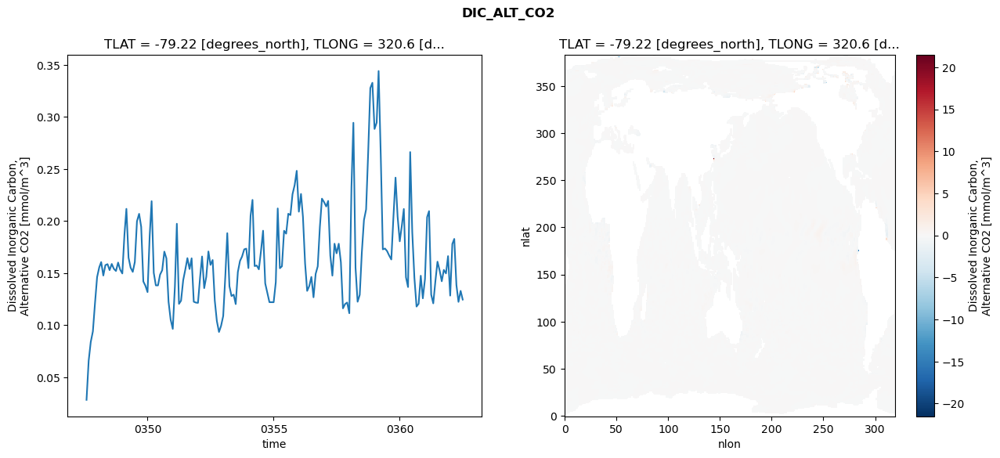
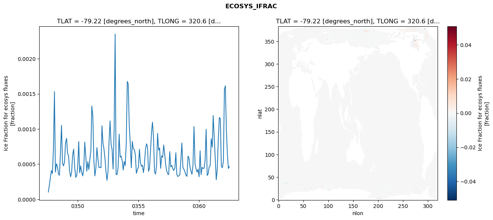
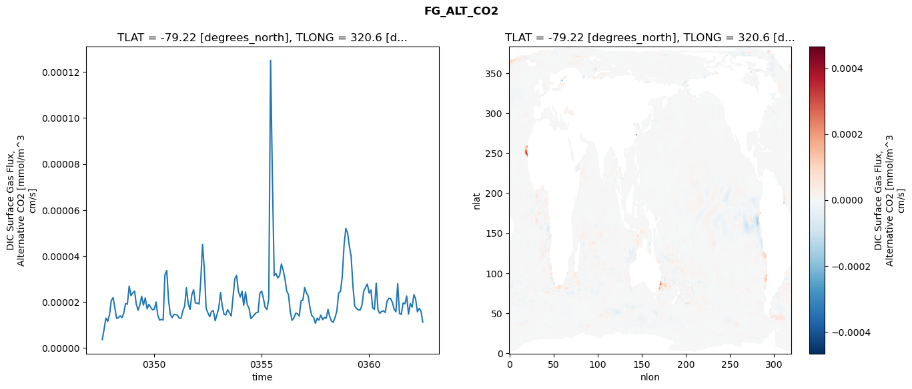

glb-dor_North_Atlantic_basin_007_1999-07-01_00030#
Simulation details#
Case: smyle.cdr-atlas-v0.glb-dor_North_Atlantic_basin_007_1999-07-01_00030.001
Basin: North_Atlantic_basin
Polygon: 7.0
Start date: 1999-07
Show code cell source Hide code cell source
import xarray as xr
import matplotlib.pyplot as plt
Show code cell source Hide code cell source
zarr_store = "/path/to/zarr/store"
# Parameters
zarr_store = "/global/cfs/projectdirs/m4746/Projects/Ocean-CDR-Atlas-v0/data/validation/smyle.cdr-atlas-v0.glb-dor_North_Atlantic_basin_007_1999-07-01_00030.001.validation.zarr"
Show code cell source Hide code cell source
%%time
ds_o = xr.open_zarr(zarr_store).compute()
ds_o
CPU times: user 641 ms, sys: 474 ms, total: 1.11 s
Wall time: 1.31 s
<xarray.Dataset> Size: 2MB
Dimensions: (nlat: 384, nlon: 320, time: 180)
Coordinates:
TLAT float64 8B -79.22
TLONG float64 8B 320.6
ULAT float64 8B -78.95
ULONG float64 8B 321.1
* time (time) object 1kB 0347-08-01 00:00:00 ... 0362-07-01 0...
z_t float32 4B 500.0
Dimensions without coordinates: nlat, nlon
Data variables:
ALK_ALT_CO2_diff (nlat, nlon) float32 492kB nan nan nan ... nan nan nan
ALK_ALT_CO2_rmse (time) float64 1kB 0.01481 0.02943 ... 0.1116 0.0994
DIC_ALT_CO2_diff (nlat, nlon) float32 492kB nan nan nan ... nan nan nan
DIC_ALT_CO2_rmse (time) float64 1kB 0.02836 0.0659 ... 0.133 0.1247
ECOSYS_IFRAC_diff (nlat, nlon) float32 492kB nan nan nan ... nan nan nan
ECOSYS_IFRAC_rmse (time) float64 1kB 0.000102 0.0002019 ... 0.0004671
FG_ALT_CO2_diff (nlat, nlon) float32 492kB nan nan nan ... nan nan nan
FG_ALT_CO2_rmse (time) float64 1kB 3.634e-06 8.215e-06 ... 1.123e-05xarray.Dataset
- nlat: 384
- nlon: 320
- time: 180
- TLAT()float64-79.22
- long_name :
- array of t-grid latitudes
- units :
- degrees_north
array(-79.22052261)
- TLONG()float64320.6
- long_name :
- array of t-grid longitudes
- units :
- degrees_east
array(320.56250892)
- ULAT()float64-78.95
- long_name :
- array of u-grid latitudes
- units :
- degrees_north
array(-78.95289509)
- ULONG()float64321.1
- long_name :
- array of u-grid longitudes
- units :
- degrees_east
array(321.12500894)
- time(time)object0347-08-01 00:00:00 ... 0362-07-...
- bounds :
- time_bound
- long_name :
- time
array([cftime.DatetimeNoLeap(347, 8, 1, 0, 0, 0, 0, has_year_zero=True), cftime.DatetimeNoLeap(347, 9, 1, 0, 0, 0, 0, has_year_zero=True), cftime.DatetimeNoLeap(347, 10, 1, 0, 0, 0, 0, has_year_zero=True), cftime.DatetimeNoLeap(347, 11, 1, 0, 0, 0, 0, has_year_zero=True), cftime.DatetimeNoLeap(347, 12, 1, 0, 0, 0, 0, has_year_zero=True), cftime.DatetimeNoLeap(348, 1, 1, 0, 0, 0, 0, has_year_zero=True), cftime.DatetimeNoLeap(348, 2, 1, 0, 0, 0, 0, has_year_zero=True), cftime.DatetimeNoLeap(348, 3, 1, 0, 0, 0, 0, has_year_zero=True), cftime.DatetimeNoLeap(348, 4, 1, 0, 0, 0, 0, has_year_zero=True), cftime.DatetimeNoLeap(348, 5, 1, 0, 0, 0, 0, has_year_zero=True), cftime.DatetimeNoLeap(348, 6, 1, 0, 0, 0, 0, has_year_zero=True), cftime.DatetimeNoLeap(348, 7, 1, 0, 0, 0, 0, has_year_zero=True), cftime.DatetimeNoLeap(348, 8, 1, 0, 0, 0, 0, has_year_zero=True), cftime.DatetimeNoLeap(348, 9, 1, 0, 0, 0, 0, has_year_zero=True), cftime.DatetimeNoLeap(348, 10, 1, 0, 0, 0, 0, has_year_zero=True), cftime.DatetimeNoLeap(348, 11, 1, 0, 0, 0, 0, has_year_zero=True), cftime.DatetimeNoLeap(348, 12, 1, 0, 0, 0, 0, has_year_zero=True), cftime.DatetimeNoLeap(349, 1, 1, 0, 0, 0, 0, has_year_zero=True), cftime.DatetimeNoLeap(349, 2, 1, 0, 0, 0, 0, has_year_zero=True), cftime.DatetimeNoLeap(349, 3, 1, 0, 0, 0, 0, has_year_zero=True), cftime.DatetimeNoLeap(349, 4, 1, 0, 0, 0, 0, has_year_zero=True), cftime.DatetimeNoLeap(349, 5, 1, 0, 0, 0, 0, has_year_zero=True), cftime.DatetimeNoLeap(349, 6, 1, 0, 0, 0, 0, has_year_zero=True), cftime.DatetimeNoLeap(349, 7, 1, 0, 0, 0, 0, has_year_zero=True), cftime.DatetimeNoLeap(349, 8, 1, 0, 0, 0, 0, has_year_zero=True), cftime.DatetimeNoLeap(349, 9, 1, 0, 0, 0, 0, has_year_zero=True), cftime.DatetimeNoLeap(349, 10, 1, 0, 0, 0, 0, has_year_zero=True), cftime.DatetimeNoLeap(349, 11, 1, 0, 0, 0, 0, has_year_zero=True), cftime.DatetimeNoLeap(349, 12, 1, 0, 0, 0, 0, has_year_zero=True), cftime.DatetimeNoLeap(350, 1, 1, 0, 0, 0, 0, has_year_zero=True), cftime.DatetimeNoLeap(350, 2, 1, 0, 0, 0, 0, has_year_zero=True), cftime.DatetimeNoLeap(350, 3, 1, 0, 0, 0, 0, has_year_zero=True), cftime.DatetimeNoLeap(350, 4, 1, 0, 0, 0, 0, has_year_zero=True), cftime.DatetimeNoLeap(350, 5, 1, 0, 0, 0, 0, has_year_zero=True), cftime.DatetimeNoLeap(350, 6, 1, 0, 0, 0, 0, has_year_zero=True), cftime.DatetimeNoLeap(350, 7, 1, 0, 0, 0, 0, has_year_zero=True), cftime.DatetimeNoLeap(350, 8, 1, 0, 0, 0, 0, has_year_zero=True), cftime.DatetimeNoLeap(350, 9, 1, 0, 0, 0, 0, has_year_zero=True), cftime.DatetimeNoLeap(350, 10, 1, 0, 0, 0, 0, has_year_zero=True), cftime.DatetimeNoLeap(350, 11, 1, 0, 0, 0, 0, has_year_zero=True), cftime.DatetimeNoLeap(350, 12, 1, 0, 0, 0, 0, has_year_zero=True), cftime.DatetimeNoLeap(351, 1, 1, 0, 0, 0, 0, has_year_zero=True), cftime.DatetimeNoLeap(351, 2, 1, 0, 0, 0, 0, has_year_zero=True), cftime.DatetimeNoLeap(351, 3, 1, 0, 0, 0, 0, has_year_zero=True), cftime.DatetimeNoLeap(351, 4, 1, 0, 0, 0, 0, has_year_zero=True), cftime.DatetimeNoLeap(351, 5, 1, 0, 0, 0, 0, has_year_zero=True), cftime.DatetimeNoLeap(351, 6, 1, 0, 0, 0, 0, has_year_zero=True), cftime.DatetimeNoLeap(351, 7, 1, 0, 0, 0, 0, has_year_zero=True), cftime.DatetimeNoLeap(351, 8, 1, 0, 0, 0, 0, has_year_zero=True), cftime.DatetimeNoLeap(351, 9, 1, 0, 0, 0, 0, has_year_zero=True), cftime.DatetimeNoLeap(351, 10, 1, 0, 0, 0, 0, has_year_zero=True), cftime.DatetimeNoLeap(351, 11, 1, 0, 0, 0, 0, has_year_zero=True), cftime.DatetimeNoLeap(351, 12, 1, 0, 0, 0, 0, has_year_zero=True), cftime.DatetimeNoLeap(352, 1, 1, 0, 0, 0, 0, has_year_zero=True), cftime.DatetimeNoLeap(352, 2, 1, 0, 0, 0, 0, has_year_zero=True), cftime.DatetimeNoLeap(352, 3, 1, 0, 0, 0, 0, has_year_zero=True), cftime.DatetimeNoLeap(352, 4, 1, 0, 0, 0, 0, has_year_zero=True), cftime.DatetimeNoLeap(352, 5, 1, 0, 0, 0, 0, has_year_zero=True), cftime.DatetimeNoLeap(352, 6, 1, 0, 0, 0, 0, has_year_zero=True), cftime.DatetimeNoLeap(352, 7, 1, 0, 0, 0, 0, has_year_zero=True), cftime.DatetimeNoLeap(352, 8, 1, 0, 0, 0, 0, has_year_zero=True), cftime.DatetimeNoLeap(352, 9, 1, 0, 0, 0, 0, has_year_zero=True), cftime.DatetimeNoLeap(352, 10, 1, 0, 0, 0, 0, has_year_zero=True), cftime.DatetimeNoLeap(352, 11, 1, 0, 0, 0, 0, has_year_zero=True), cftime.DatetimeNoLeap(352, 12, 1, 0, 0, 0, 0, has_year_zero=True), cftime.DatetimeNoLeap(353, 1, 1, 0, 0, 0, 0, has_year_zero=True), cftime.DatetimeNoLeap(353, 2, 1, 0, 0, 0, 0, has_year_zero=True), cftime.DatetimeNoLeap(353, 3, 1, 0, 0, 0, 0, has_year_zero=True), cftime.DatetimeNoLeap(353, 4, 1, 0, 0, 0, 0, has_year_zero=True), cftime.DatetimeNoLeap(353, 5, 1, 0, 0, 0, 0, has_year_zero=True), cftime.DatetimeNoLeap(353, 6, 1, 0, 0, 0, 0, has_year_zero=True), cftime.DatetimeNoLeap(353, 7, 1, 0, 0, 0, 0, has_year_zero=True), cftime.DatetimeNoLeap(353, 8, 1, 0, 0, 0, 0, has_year_zero=True), cftime.DatetimeNoLeap(353, 9, 1, 0, 0, 0, 0, has_year_zero=True), cftime.DatetimeNoLeap(353, 10, 1, 0, 0, 0, 0, has_year_zero=True), cftime.DatetimeNoLeap(353, 11, 1, 0, 0, 0, 0, has_year_zero=True), cftime.DatetimeNoLeap(353, 12, 1, 0, 0, 0, 0, has_year_zero=True), cftime.DatetimeNoLeap(354, 1, 1, 0, 0, 0, 0, has_year_zero=True), cftime.DatetimeNoLeap(354, 2, 1, 0, 0, 0, 0, has_year_zero=True), cftime.DatetimeNoLeap(354, 3, 1, 0, 0, 0, 0, has_year_zero=True), cftime.DatetimeNoLeap(354, 4, 1, 0, 0, 0, 0, has_year_zero=True), cftime.DatetimeNoLeap(354, 5, 1, 0, 0, 0, 0, has_year_zero=True), cftime.DatetimeNoLeap(354, 6, 1, 0, 0, 0, 0, has_year_zero=True), cftime.DatetimeNoLeap(354, 7, 1, 0, 0, 0, 0, has_year_zero=True), cftime.DatetimeNoLeap(354, 8, 1, 0, 0, 0, 0, has_year_zero=True), cftime.DatetimeNoLeap(354, 9, 1, 0, 0, 0, 0, has_year_zero=True), cftime.DatetimeNoLeap(354, 10, 1, 0, 0, 0, 0, has_year_zero=True), cftime.DatetimeNoLeap(354, 11, 1, 0, 0, 0, 0, has_year_zero=True), cftime.DatetimeNoLeap(354, 12, 1, 0, 0, 0, 0, has_year_zero=True), cftime.DatetimeNoLeap(355, 1, 1, 0, 0, 0, 0, has_year_zero=True), cftime.DatetimeNoLeap(355, 2, 1, 0, 0, 0, 0, has_year_zero=True), cftime.DatetimeNoLeap(355, 3, 1, 0, 0, 0, 0, has_year_zero=True), cftime.DatetimeNoLeap(355, 4, 1, 0, 0, 0, 0, has_year_zero=True), cftime.DatetimeNoLeap(355, 5, 1, 0, 0, 0, 0, has_year_zero=True), cftime.DatetimeNoLeap(355, 6, 1, 0, 0, 0, 0, has_year_zero=True), cftime.DatetimeNoLeap(355, 7, 1, 0, 0, 0, 0, has_year_zero=True), cftime.DatetimeNoLeap(355, 8, 1, 0, 0, 0, 0, has_year_zero=True), cftime.DatetimeNoLeap(355, 9, 1, 0, 0, 0, 0, has_year_zero=True), cftime.DatetimeNoLeap(355, 10, 1, 0, 0, 0, 0, has_year_zero=True), cftime.DatetimeNoLeap(355, 11, 1, 0, 0, 0, 0, has_year_zero=True), cftime.DatetimeNoLeap(355, 12, 1, 0, 0, 0, 0, has_year_zero=True), cftime.DatetimeNoLeap(356, 1, 1, 0, 0, 0, 0, has_year_zero=True), cftime.DatetimeNoLeap(356, 2, 1, 0, 0, 0, 0, has_year_zero=True), cftime.DatetimeNoLeap(356, 3, 1, 0, 0, 0, 0, has_year_zero=True), cftime.DatetimeNoLeap(356, 4, 1, 0, 0, 0, 0, has_year_zero=True), cftime.DatetimeNoLeap(356, 5, 1, 0, 0, 0, 0, has_year_zero=True), cftime.DatetimeNoLeap(356, 6, 1, 0, 0, 0, 0, has_year_zero=True), cftime.DatetimeNoLeap(356, 7, 1, 0, 0, 0, 0, has_year_zero=True), cftime.DatetimeNoLeap(356, 8, 1, 0, 0, 0, 0, has_year_zero=True), cftime.DatetimeNoLeap(356, 9, 1, 0, 0, 0, 0, has_year_zero=True), cftime.DatetimeNoLeap(356, 10, 1, 0, 0, 0, 0, has_year_zero=True), cftime.DatetimeNoLeap(356, 11, 1, 0, 0, 0, 0, has_year_zero=True), cftime.DatetimeNoLeap(356, 12, 1, 0, 0, 0, 0, has_year_zero=True), cftime.DatetimeNoLeap(357, 1, 1, 0, 0, 0, 0, has_year_zero=True), cftime.DatetimeNoLeap(357, 2, 1, 0, 0, 0, 0, has_year_zero=True), cftime.DatetimeNoLeap(357, 3, 1, 0, 0, 0, 0, has_year_zero=True), cftime.DatetimeNoLeap(357, 4, 1, 0, 0, 0, 0, has_year_zero=True), cftime.DatetimeNoLeap(357, 5, 1, 0, 0, 0, 0, has_year_zero=True), cftime.DatetimeNoLeap(357, 6, 1, 0, 0, 0, 0, has_year_zero=True), cftime.DatetimeNoLeap(357, 7, 1, 0, 0, 0, 0, has_year_zero=True), cftime.DatetimeNoLeap(357, 8, 1, 0, 0, 0, 0, has_year_zero=True), cftime.DatetimeNoLeap(357, 9, 1, 0, 0, 0, 0, has_year_zero=True), cftime.DatetimeNoLeap(357, 10, 1, 0, 0, 0, 0, has_year_zero=True), cftime.DatetimeNoLeap(357, 11, 1, 0, 0, 0, 0, has_year_zero=True), cftime.DatetimeNoLeap(357, 12, 1, 0, 0, 0, 0, has_year_zero=True), cftime.DatetimeNoLeap(358, 1, 1, 0, 0, 0, 0, has_year_zero=True), cftime.DatetimeNoLeap(358, 2, 1, 0, 0, 0, 0, has_year_zero=True), cftime.DatetimeNoLeap(358, 3, 1, 0, 0, 0, 0, has_year_zero=True), cftime.DatetimeNoLeap(358, 4, 1, 0, 0, 0, 0, has_year_zero=True), cftime.DatetimeNoLeap(358, 5, 1, 0, 0, 0, 0, has_year_zero=True), cftime.DatetimeNoLeap(358, 6, 1, 0, 0, 0, 0, has_year_zero=True), cftime.DatetimeNoLeap(358, 7, 1, 0, 0, 0, 0, has_year_zero=True), cftime.DatetimeNoLeap(358, 8, 1, 0, 0, 0, 0, has_year_zero=True), cftime.DatetimeNoLeap(358, 9, 1, 0, 0, 0, 0, has_year_zero=True), cftime.DatetimeNoLeap(358, 10, 1, 0, 0, 0, 0, has_year_zero=True), cftime.DatetimeNoLeap(358, 11, 1, 0, 0, 0, 0, has_year_zero=True), cftime.DatetimeNoLeap(358, 12, 1, 0, 0, 0, 0, has_year_zero=True), cftime.DatetimeNoLeap(359, 1, 1, 0, 0, 0, 0, has_year_zero=True), cftime.DatetimeNoLeap(359, 2, 1, 0, 0, 0, 0, has_year_zero=True), cftime.DatetimeNoLeap(359, 3, 1, 0, 0, 0, 0, has_year_zero=True), cftime.DatetimeNoLeap(359, 4, 1, 0, 0, 0, 0, has_year_zero=True), cftime.DatetimeNoLeap(359, 5, 1, 0, 0, 0, 0, has_year_zero=True), cftime.DatetimeNoLeap(359, 6, 1, 0, 0, 0, 0, has_year_zero=True), cftime.DatetimeNoLeap(359, 7, 1, 0, 0, 0, 0, has_year_zero=True), cftime.DatetimeNoLeap(359, 8, 1, 0, 0, 0, 0, has_year_zero=True), cftime.DatetimeNoLeap(359, 9, 1, 0, 0, 0, 0, has_year_zero=True), cftime.DatetimeNoLeap(359, 10, 1, 0, 0, 0, 0, has_year_zero=True), cftime.DatetimeNoLeap(359, 11, 1, 0, 0, 0, 0, has_year_zero=True), cftime.DatetimeNoLeap(359, 12, 1, 0, 0, 0, 0, has_year_zero=True), cftime.DatetimeNoLeap(360, 1, 1, 0, 0, 0, 0, has_year_zero=True), cftime.DatetimeNoLeap(360, 2, 1, 0, 0, 0, 0, has_year_zero=True), cftime.DatetimeNoLeap(360, 3, 1, 0, 0, 0, 0, has_year_zero=True), cftime.DatetimeNoLeap(360, 4, 1, 0, 0, 0, 0, has_year_zero=True), cftime.DatetimeNoLeap(360, 5, 1, 0, 0, 0, 0, has_year_zero=True), cftime.DatetimeNoLeap(360, 6, 1, 0, 0, 0, 0, has_year_zero=True), cftime.DatetimeNoLeap(360, 7, 1, 0, 0, 0, 0, has_year_zero=True), cftime.DatetimeNoLeap(360, 8, 1, 0, 0, 0, 0, has_year_zero=True), cftime.DatetimeNoLeap(360, 9, 1, 0, 0, 0, 0, has_year_zero=True), cftime.DatetimeNoLeap(360, 10, 1, 0, 0, 0, 0, has_year_zero=True), cftime.DatetimeNoLeap(360, 11, 1, 0, 0, 0, 0, has_year_zero=True), cftime.DatetimeNoLeap(360, 12, 1, 0, 0, 0, 0, has_year_zero=True), cftime.DatetimeNoLeap(361, 1, 1, 0, 0, 0, 0, has_year_zero=True), cftime.DatetimeNoLeap(361, 2, 1, 0, 0, 0, 0, has_year_zero=True), cftime.DatetimeNoLeap(361, 3, 1, 0, 0, 0, 0, has_year_zero=True), cftime.DatetimeNoLeap(361, 4, 1, 0, 0, 0, 0, has_year_zero=True), cftime.DatetimeNoLeap(361, 5, 1, 0, 0, 0, 0, has_year_zero=True), cftime.DatetimeNoLeap(361, 6, 1, 0, 0, 0, 0, has_year_zero=True), cftime.DatetimeNoLeap(361, 7, 1, 0, 0, 0, 0, has_year_zero=True), cftime.DatetimeNoLeap(361, 8, 1, 0, 0, 0, 0, has_year_zero=True), cftime.DatetimeNoLeap(361, 9, 1, 0, 0, 0, 0, has_year_zero=True), cftime.DatetimeNoLeap(361, 10, 1, 0, 0, 0, 0, has_year_zero=True), cftime.DatetimeNoLeap(361, 11, 1, 0, 0, 0, 0, has_year_zero=True), cftime.DatetimeNoLeap(361, 12, 1, 0, 0, 0, 0, has_year_zero=True), cftime.DatetimeNoLeap(362, 1, 1, 0, 0, 0, 0, has_year_zero=True), cftime.DatetimeNoLeap(362, 2, 1, 0, 0, 0, 0, has_year_zero=True), cftime.DatetimeNoLeap(362, 3, 1, 0, 0, 0, 0, has_year_zero=True), cftime.DatetimeNoLeap(362, 4, 1, 0, 0, 0, 0, has_year_zero=True), cftime.DatetimeNoLeap(362, 5, 1, 0, 0, 0, 0, has_year_zero=True), cftime.DatetimeNoLeap(362, 6, 1, 0, 0, 0, 0, has_year_zero=True), cftime.DatetimeNoLeap(362, 7, 1, 0, 0, 0, 0, has_year_zero=True)], dtype=object) - z_t()float32500.0
- long_name :
- depth from surface to midpoint of layer
- positive :
- down
- units :
- centimeters
- valid_max :
- 537500.0
- valid_min :
- 500.0
array(500., dtype=float32)
- ALK_ALT_CO2_diff(nlat, nlon)float32nan nan nan nan ... nan nan nan nan
- cell_methods :
- time: mean
- grid_loc :
- 3111
- long_name :
- Alkalinity, Alternative CO2
- units :
- meq/m^3
array([[ nan, nan, nan, ..., nan, nan, nan], [ nan, nan, nan, ..., nan, nan, nan], [0.01879883, 0.00805664, 0.01318359, ..., nan, nan, nan], ..., [ nan, nan, nan, ..., nan, nan, nan], [ nan, nan, nan, ..., nan, nan, nan], [ nan, nan, nan, ..., nan, nan, nan]], dtype=float32) - ALK_ALT_CO2_rmse(time)float640.01481 0.02943 ... 0.1116 0.0994
- cell_methods :
- time: mean
- grid_loc :
- 3111
- long_name :
- Alkalinity, Alternative CO2
- units :
- meq/m^3
array([0.0148096 , 0.02943474, 0.02980731, 0.03873055, 0.04340681, 0.05327115, 0.06059954, 0.11009064, 0.10814434, 0.14084151, 0.13382539, 0.10284315, 0.10006071, 0.06599766, 0.05327628, 0.05037761, 0.07480708, 0.08671179, 0.14645414, 0.18597106, 0.12329549, 0.12999326, 0.12222415, 0.13093183, 0.18025668, 0.17703147, 0.15905634, 0.08279179, 0.06682312, 0.07037873, 0.16085901, 0.21326262, 0.13507179, 0.12198112, 0.12066382, 0.12213781, 0.11800061, 0.14812541, 0.14156646, 0.08999607, 0.06336388, 0.05684285, 0.11869357, 0.19592441, 0.10275585, 0.10027561, 0.11850682, 0.12705458, 0.14487209, 0.11238006, 0.08982618, 0.06439777, 0.06218009, 0.06176879, 0.10050223, 0.1401579 , 0.08751369, 0.11036358, 0.15071424, 0.13533997, 0.13563592, 0.0780426 , 0.05267826, 0.05129088, 0.05064523, 0.06162918, 0.12594473, 0.18016679, 0.11642372, 0.10738418, 0.11196758, 0.08841427, 0.13294249, 0.09940565, 0.07377682, 0.0756634 , 0.08376331, 0.07510899, 0.12356177, 0.17701042, 0.10271974, 0.10484696, 0.124373 , 0.14685797, 0.16891224, 0.09677871, 0.07843516, 0.06305031, 0.0620114 , 0.06314585, 0.0954264 , 0.1821608 , 0.10723883, 0.09760688, 0.12173398, 0.12461695, 0.18122041, 0.16902971, 0.13897538, 0.14028997, 0.1128183 , 0.09428205, 0.10465909, 0.11120551, 0.09648366, 0.09153192, 0.10034002, 0.11093561, 0.09654778, 0.12790003, 0.09644789, 0.12835532, 0.14983692, 0.15423242, 0.16218727, 0.18481903, 0.12757664, 0.11381531, 0.17023037, 0.14757347, 0.1601991 , 0.14834037, 0.09292534, 0.09966507, 0.10736043, 0.09396214, 0.24759334, 0.32077516, 0.15966511, 0.11808325, 0.10568976, 0.12952535, 0.13652587, 0.10722396, 0.1142427 , 0.11643467, 0.13548724, 0.1216524 , 0.12980322, 0.16323992, 0.16233905, 0.10918572, 0.14042088, 0.14098596, 0.12782822, 0.08678957, 0.11437242, 0.10747636, 0.09270218, 0.08274035, 0.11737552, 0.16782387, 0.09431731, 0.10349849, 0.26532485, 0.16718136, 0.11191204, 0.06938305, 0.07441952, 0.0827993 , 0.07534374, 0.0849474 , 0.17621162, 0.1897286 , 0.08655836, 0.0901181 , 0.1264252 , 0.13593958, 0.11395847, 0.09886767, 0.11683313, 0.08922266, 0.09185884, 0.07182079, 0.14485544, 0.14692773, 0.09339395, 0.0862902 , 0.11160158, 0.09939945]) - DIC_ALT_CO2_diff(nlat, nlon)float32nan nan nan nan ... nan nan nan nan
- cell_methods :
- time: mean
- grid_loc :
- 3111
- long_name :
- Dissolved Inorganic Carbon, Alternative CO2
- units :
- mmol/m^3
array([[ nan, nan, nan, ..., nan, nan, nan], [ nan, nan, nan, ..., nan, nan, nan], [ 0.00341797, -0.0012207 , -0.00317383, ..., nan, nan, nan], ..., [ nan, nan, nan, ..., nan, nan, nan], [ nan, nan, nan, ..., nan, nan, nan], [ nan, nan, nan, ..., nan, nan, nan]], dtype=float32) - DIC_ALT_CO2_rmse(time)float640.02836 0.0659 ... 0.133 0.1247
- cell_methods :
- time: mean
- grid_loc :
- 3111
- long_name :
- Dissolved Inorganic Carbon, Alternative CO2
- units :
- mmol/m^3
array([0.02835561, 0.06590363, 0.08389339, 0.09412048, 0.12072243, 0.14625797, 0.15559707, 0.16067058, 0.14772611, 0.15771917, 0.15866385, 0.15292899, 0.15886102, 0.15411149, 0.15211453, 0.16019909, 0.15338509, 0.14970915, 0.18723379, 0.21176707, 0.1649189 , 0.15531534, 0.15123237, 0.16073865, 0.19983929, 0.20700576, 0.19452378, 0.14204604, 0.13795069, 0.13182434, 0.18590216, 0.21913047, 0.15031931, 0.13829395, 0.13826716, 0.14858133, 0.15278763, 0.17071563, 0.16422216, 0.12254752, 0.10553034, 0.09651194, 0.13727085, 0.19745638, 0.12050696, 0.12357773, 0.14331033, 0.15326302, 0.16445738, 0.15396903, 0.16427235, 0.12257802, 0.12175556, 0.12150407, 0.14636742, 0.16601733, 0.13564961, 0.14646767, 0.17084859, 0.15792767, 0.16265348, 0.12369392, 0.10408972, 0.09353627, 0.0993837 , 0.10891757, 0.14768033, 0.18842447, 0.13750702, 0.12806585, 0.12936036, 0.12032123, 0.15117809, 0.16175649, 0.1660065 , 0.17285526, 0.17355301, 0.15484802, 0.20511431, 0.22036652, 0.15678887, 0.15737192, 0.15369235, 0.1708561 , 0.19076569, 0.14020174, 0.13120641, 0.1221585 , 0.12215288, 0.12210159, 0.14134644, 0.21216843, 0.15473006, 0.15659228, 0.19072885, 0.18795877, 0.20705803, 0.20582001, 0.22587034, 0.23457903, 0.24827939, 0.2090583 , 0.22607532, 0.20408632, 0.15934057, 0.13298237, 0.13770144, 0.14638139, 0.12685103, 0.14933141, 0.15655447, 0.19451041, 0.22156314, 0.21823206, 0.21404221, 0.21940043, 0.1669482 , 0.14764931, 0.17827924, 0.16907269, 0.17826918, 0.16050181, 0.11620825, 0.12035827, 0.12180561, 0.11154925, 0.23241138, 0.29442464, 0.15520044, 0.12256454, 0.12919409, 0.16968927, 0.20102663, 0.21118845, 0.26569199, 0.32774125, 0.33282996, 0.28847853, 0.29463222, 0.34411656, 0.26337552, 0.17287378, 0.17366666, 0.17128507, 0.16695585, 0.16314706, 0.20329498, 0.24176241, 0.20429838, 0.18060189, 0.19601264, 0.21164198, 0.14601625, 0.13667676, 0.26629149, 0.18935442, 0.14552463, 0.1179362 , 0.1206367 , 0.14754551, 0.12584916, 0.14432655, 0.20383173, 0.20958614, 0.12940148, 0.12103246, 0.14249082, 0.161051 , 0.15269668, 0.14222453, 0.15314273, 0.1497643 , 0.16636794, 0.1284614 , 0.17807303, 0.18291861, 0.13862462, 0.12246086, 0.13300176, 0.12465147]) - ECOSYS_IFRAC_diff(nlat, nlon)float32nan nan nan nan ... nan nan nan nan
- cell_methods :
- time: mean
- grid_loc :
- 2110
- long_name :
- Ice Fraction for ecosys fluxes
- units :
- fraction
array([[ nan, nan, nan, ..., nan, nan, nan], [ nan, nan, nan, ..., nan, nan, nan], [1.7821789e-05, 6.8247318e-05, 2.0205975e-05, ..., nan, nan, nan], ..., [ nan, nan, nan, ..., nan, nan, nan], [ nan, nan, nan, ..., nan, nan, nan], [ nan, nan, nan, ..., nan, nan, nan]], dtype=float32) - ECOSYS_IFRAC_rmse(time)float640.000102 0.0002019 ... 0.0004671
- cell_methods :
- time: mean
- grid_loc :
- 2110
- long_name :
- Ice Fraction for ecosys fluxes
- units :
- fraction
array([0.00010198, 0.00020195, 0.00030777, 0.00040862, 0.00036411, 0.00071173, 0.00153135, 0.00038578, 0.00050482, 0.00046813, 0.00035991, 0.0003408 , 0.00067772, 0.00105258, 0.00051218, 0.00047436, 0.00053245, 0.00080705, 0.00086693, 0.00064881, 0.00061923, 0.00040335, 0.00031954, 0.00037859, 0.00062773, 0.00071277, 0.00046285, 0.00031133, 0.00033397, 0.00046763, 0.00082208, 0.00037704, 0.00047333, 0.00038356, 0.00033191, 0.00043825, 0.00081403, 0.00060329, 0.00039894, 0.00053487, 0.00042264, 0.000566 , 0.00068968, 0.00132721, 0.00118451, 0.00055906, 0.00033218, 0.00043805, 0.00073539, 0.00057708, 0.00045291, 0.00045307, 0.0004483 , 0.00104568, 0.00079332, 0.00071589, 0.0005776 , 0.00039348, 0.00027017, 0.00039321, 0.00081832, 0.0011151 , 0.00078169, 0.00070627, 0.0004294 , 0.00098613, 0.0023499 , 0.0003503 , 0.00035309, 0.00045216, 0.00092631, 0.00059806, 0.00061365, 0.0005504 , 0.00041607, 0.00053691, 0.0004786 , 0.00080074, 0.00167689, 0.00164056, 0.00104824, 0.0007947 , 0.00044805, 0.00082309, 0.00071714, 0.00070831, 0.00063597, 0.00036797, 0.00042243, 0.00045263, 0.00071245, 0.00052546, 0.00046849, 0.00048465, 0.00037896, 0.00049222, 0.00070759, 0.00078898, 0.00074974, 0.00039668, 0.00044211, 0.00069512, 0.00096323, 0.00109772, 0.00087038, 0.00039065, 0.00035823, 0.00048334, 0.00093717, 0.00069867, 0.00073037, 0.00043891, 0.00061819, 0.00059648, 0.0007726 , 0.00065119, 0.00049194, 0.00040827, 0.00036162, 0.000351 , 0.00067728, 0.00045993, 0.00048193, 0.00043736, 0.00040891, 0.00044337, 0.00066211, 0.00035499, 0.00032362, 0.00033323, 0.00034879, 0.00054984, 0.00080149, 0.00045296, 0.00042691, 0.00039184, 0.0003435 , 0.00032588, 0.00061292, 0.00059289, 0.00046427, 0.00040051, 0.00035473, 0.0004794 , 0.00103447, 0.0005028 , 0.00043347, 0.00038591, 0.00042679, 0.00032013, 0.00068983, 0.00035023, 0.00045385, 0.00043865, 0.00043986, 0.00055888, 0.00099487, 0.00033747, 0.00036261, 0.000463 , 0.00047629, 0.00086055, 0.00074124, 0.00119167, 0.00087955, 0.00058544, 0.00027688, 0.00042518, 0.00084144, 0.00116269, 0.00114935, 0.0004716 , 0.00044803, 0.00054086, 0.00156317, 0.00161361, 0.00098658, 0.0006473 , 0.00043707, 0.0004671 ]) - FG_ALT_CO2_diff(nlat, nlon)float32nan nan nan nan ... nan nan nan nan
- cell_methods :
- time: mean
- grid_loc :
- 2110
- long_name :
- DIC Surface Gas Flux, Alternative CO2
- units :
- mmol/m^3 cm/s
array([[ nan, nan, nan, ..., nan, nan, nan], [ nan, nan, nan, ..., nan, nan, nan], [5.2051519e-09, 1.0186113e-08, 1.7744128e-08, ..., nan, nan, nan], ..., [ nan, nan, nan, ..., nan, nan, nan], [ nan, nan, nan, ..., nan, nan, nan], [ nan, nan, nan, ..., nan, nan, nan]], dtype=float32) - FG_ALT_CO2_rmse(time)float643.634e-06 8.215e-06 ... 1.123e-05
- cell_methods :
- time: mean
- grid_loc :
- 2110
- long_name :
- DIC Surface Gas Flux, Alternative CO2
- units :
- mmol/m^3 cm/s
array([3.63427284e-06, 8.21456920e-06, 1.29784442e-05, 1.15276990e-05, 1.43878727e-05, 2.06147023e-05, 2.18947091e-05, 1.77308268e-05, 1.28669716e-05, 1.31028315e-05, 1.39798296e-05, 1.31848784e-05, 1.51497634e-05, 1.93351489e-05, 1.90054103e-05, 2.68774448e-05, 2.27307802e-05, 2.40107624e-05, 2.47204570e-05, 1.91323759e-05, 1.63712216e-05, 1.87590669e-05, 2.24682504e-05, 1.86393838e-05, 2.17625354e-05, 1.70340404e-05, 1.89326490e-05, 1.76416128e-05, 1.65940012e-05, 1.68732753e-05, 1.99601586e-05, 1.43619569e-05, 1.20789002e-05, 1.24477509e-05, 1.21547101e-05, 3.18125577e-05, 3.36509370e-05, 2.06520474e-05, 1.45938433e-05, 1.32193724e-05, 1.45546478e-05, 1.44664925e-05, 1.42131680e-05, 1.29685151e-05, 1.29050559e-05, 1.61363922e-05, 1.82187012e-05, 2.61590088e-05, 1.91838049e-05, 1.67556619e-05, 2.31624237e-05, 2.53318241e-05, 1.94694023e-05, 1.95707439e-05, 1.91009340e-05, 2.91630860e-05, 4.50039904e-05, 3.44335712e-05, 1.72623835e-05, 1.52512851e-05, 1.35809973e-05, 1.59132919e-05, 1.62232887e-05, 1.18330926e-05, 1.43102432e-05, 1.73129722e-05, 2.40813732e-05, 1.83855064e-05, 1.46555812e-05, 1.43169870e-05, 1.66323752e-05, 1.53216399e-05, 1.38999528e-05, 2.22611425e-05, 3.00589777e-05, 3.15608405e-05, 2.46144127e-05, 2.21326117e-05, 2.46576410e-05, 1.85227968e-05, ... 3.64836187e-05, 3.38084699e-05, 2.99024669e-05, 2.46924013e-05, 2.32119665e-05, 1.58588056e-05, 1.20302910e-05, 1.30360379e-05, 1.51222930e-05, 1.49123347e-05, 1.38547311e-05, 2.04941177e-05, 2.07853834e-05, 2.62567607e-05, 2.38892423e-05, 2.26151046e-05, 1.74339176e-05, 1.41030542e-05, 1.33568332e-05, 1.07529895e-05, 1.29710692e-05, 1.20647207e-05, 1.43049717e-05, 1.23468441e-05, 1.32662037e-05, 1.28807382e-05, 1.67510378e-05, 1.37588511e-05, 1.16833805e-05, 1.11440816e-05, 1.32171144e-05, 1.59554059e-05, 2.38345566e-05, 2.46087456e-05, 3.08566197e-05, 4.46514001e-05, 5.19576365e-05, 4.98504445e-05, 4.39763205e-05, 3.98133184e-05, 2.68683099e-05, 1.81477807e-05, 1.72093754e-05, 1.65379705e-05, 1.64616094e-05, 1.86182103e-05, 2.46627887e-05, 2.63332112e-05, 2.77892461e-05, 2.38703076e-05, 2.51908923e-05, 1.74863436e-05, 1.68039018e-05, 2.82054811e-05, 1.64530063e-05, 1.50706011e-05, 1.58483485e-05, 1.61602372e-05, 1.54046772e-05, 2.02804168e-05, 2.16196624e-05, 2.14388546e-05, 1.97044607e-05, 1.68912892e-05, 1.57190847e-05, 2.79714775e-05, 1.49534191e-05, 1.45632547e-05, 1.95694892e-05, 1.91918113e-05, 2.25572562e-05, 1.47053685e-05, 1.92968514e-05, 1.77422747e-05, 2.31916018e-05, 2.13177427e-05, 1.57176292e-05, 1.71925999e-05, 1.60742942e-05, 1.12311404e-05])
- timePandasIndex
PandasIndex(CFTimeIndex([0347-08-01 00:00:00, 0347-09-01 00:00:00, 0347-10-01 00:00:00, 0347-11-01 00:00:00, 0347-12-01 00:00:00, 0348-01-01 00:00:00, 0348-02-01 00:00:00, 0348-03-01 00:00:00, 0348-04-01 00:00:00, 0348-05-01 00:00:00, ... 0361-10-01 00:00:00, 0361-11-01 00:00:00, 0361-12-01 00:00:00, 0362-01-01 00:00:00, 0362-02-01 00:00:00, 0362-03-01 00:00:00, 0362-04-01 00:00:00, 0362-05-01 00:00:00, 0362-06-01 00:00:00, 0362-07-01 00:00:00], dtype='object', length=180, calendar='noleap', freq='MS'))
Show code cell source Hide code cell source
variables = [v[:-5] for v in ds_o.variables if "_rmse" in v]
Show code cell source Hide code cell source
plt.rcParams.update({'figure.max_open_warning': 0})
for v in variables:
fig, axs = plt.subplots(1, 2, figsize=(15, 6))
ds_o[f"{v}_rmse"].plot(ax=axs[0])
ds_o[f"{v}_diff"].plot(ax=axs[1])
plt.suptitle(v, fontweight="bold")



